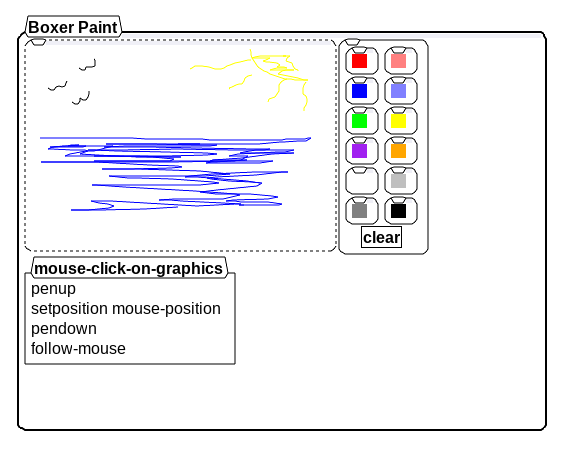

In the early 2010's, Boxer graphics canvas was transitioned from various graphics canvases provided by various lisp distributions to OpenGL, a number of things didn't quite get patched up during this transition. One of these was support for the "follow-mouse" primitive which until fixing it today, locked up the system. With this fixed we can now implement the trivial canonical Boxer Paint program. Screenshot and box file below.
